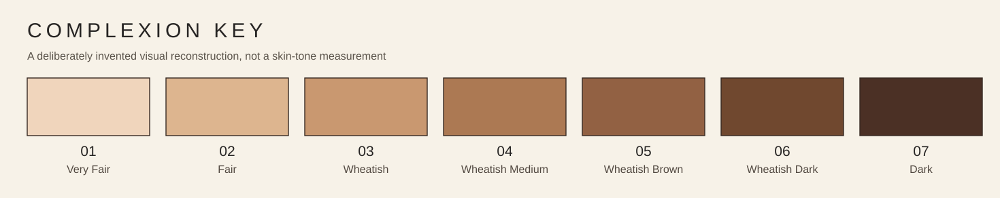

A-THRICE / DIGITAL EXHIBITION / EDITORIAL PREVIEW
The Family Archive
The family photograph is a record of connection. The colour chart is a record of classification. The collision between the two is the work.
Works await publication clearance
Painted studies exist in the working project, but they are not automatically ready to show here. This preview holds space for artist-approved masters, consent from living subjects and careful handling of images depicting children.
Each artwork will retain its own story, title, permitted date or occasion, and the identical seven-shade key.
